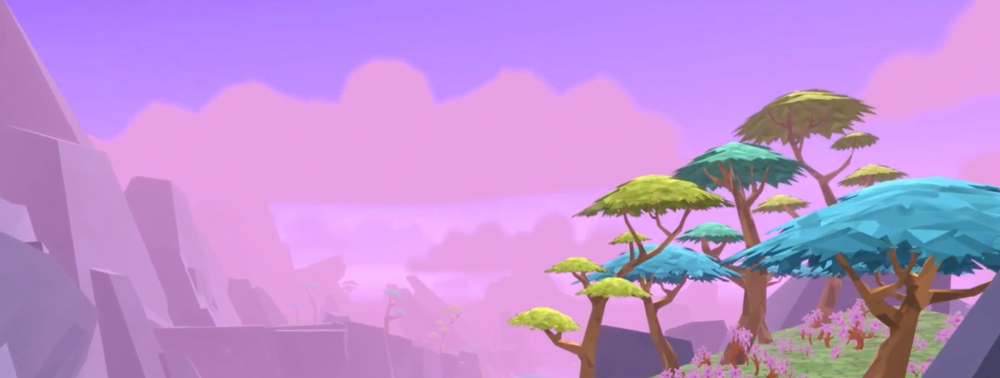
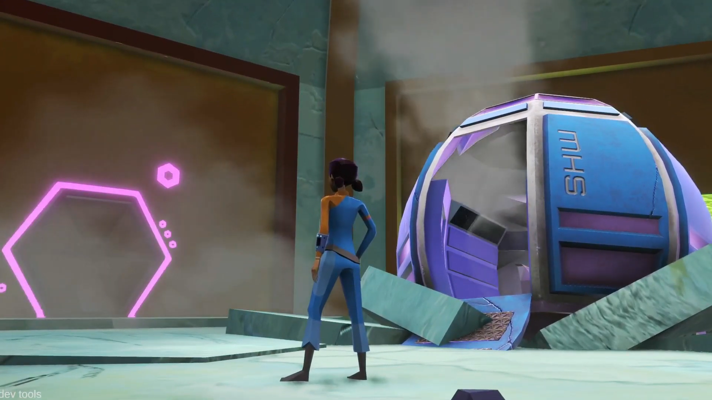
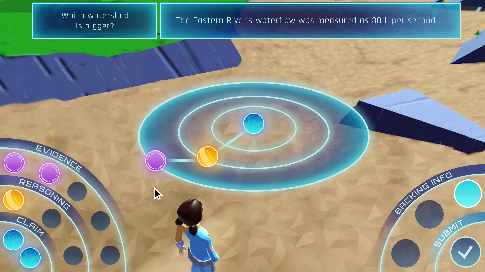
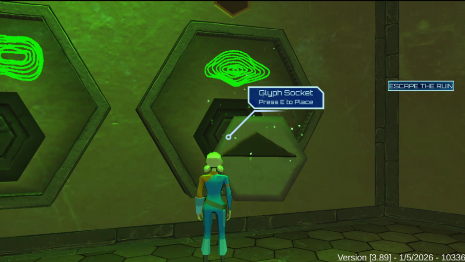
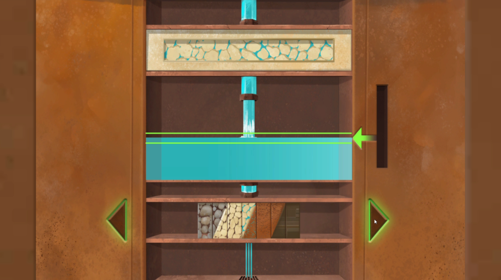

Interactive Science Learning
Mission Hydrosci
3D educational game exploring water science, scientific argumentation, and socio-ecological systems.
Overview
Mission Hydrosci places students in the role of junior scientists tasked with exploring the water systems of an alien planet. Through exploration and investigation, students learn about core water science concepts and construct evidence-basedscientific argumentats while uncovering mysteries critical to the survival of the colony.
Demo Video
My Contributions
Curriculum Alignment
Supported NGSS curriculum alignment and integration of water science learning objectives into gameplay systems.
Gameplay Systems
Redesigned gameplay mechanics and interaction systems to better support exploration and scientific reasoning.
Storyboarding & Documentation
Developed storyboards, design documentation, and communication materials supporting interdisciplinary production.
Teacher Resources
Contributed to educator-facing materials and supported redesign efforts for the teacher dashboard interface.
Cross-Disciplinary Collaboration
Collaborated closely with artists, developers, educators, and writers throughout development.
Teacher Resources
I also contributed to educator-facing support materials designed to help teachers integrate Mission Hydrosci into classroom learning environments, including a comprehensive teacher guide and a teacher dashboard with features that support tracking student progress and understanding throughout gameplay.
View Teacher Guide →Design Challenges
One of the primary challenges was designing interactions and interface systems that communicated water science and argumentation concepts while remaining intuitive, age-appropriate, and accessible for students with varying academic backgrounds and learning needs.




Reflection
Designing Mission Hydrosci strengthened my interest in creating interactive learning experiences that combine scientific exploration, narrative design, and educational gameplay.
This project was developed collaboratively with interdisciplinary teams of educators, developers, artists, and researchers. Artist Carolyn Jarecki can be found at carolynjarecki.weebly.com. Artist Angela Jarecki can be found on LinkedIn. Artist Will Slama can be found on LinkedIn. Artist Charles Sielert can be found on LinkedIn.